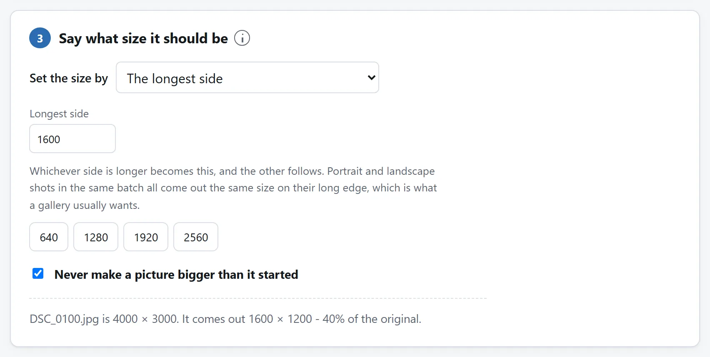
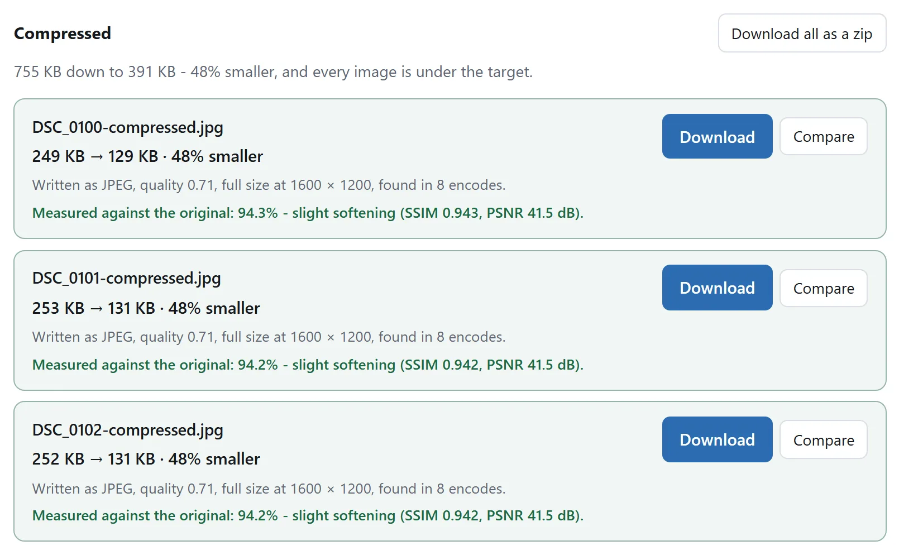

简短的答案
- iPhone 照片先来：把 HEIC 文件过一遍 HEIC 转换器，选择把元数据留在外面。转换任何东西之前，它会告诉你哪些照片带着 GPS 坐标。本来就是 JPEG 的照片跳过这一步。
- 取景和尺寸：把这一批丢到图片缩放器上。定一条长边——大多数页面 1600 像素合适，读者要放大就 2000——或者一键把整批裁成同一个比例。
- 压到预算内：在图片压缩器里收尾。它收的是以 KB 计的目标而不是画质滑块，一批交回来是一个 zip。
一切都在你的浏览器里跑。原图——全分辨率、GPS、什么都在——从不离开你的机器，这正是在本地做而不是交给转换网站的意义。
博客相册和商品目录，像素用法不同
博客或共享相册。量出最大显示宽度，为所服务的屏幕密度留足像素，设单图字节预算，在成品页面检查脸、天空和细纹。上文尺寸是起点，不是通用上限。
构图一致的商品卡片。先在缩放工具裁成卡片比例，再逐张检查；共用裁框可能切掉位置不同的商品。边缘必须全留就用留白凑精确尺寸。放大查看另留大副本，不拉伸缩略图。
同篇文章的图表和截图。小字和硬边用 PNG 或确认无损的 WebP，照片用 JPEG 或有损 WebP。PNG 转 WebP 会报告浏览器是否真的写入无损编码。看页面里的最小字，不只看文件大小。
元数据去了哪里
手机照片悄悄的风险不在像素，在标签。EXIF 元数据记着相机、时间戳，还有——几乎每部手机上——照片拍摄地的 GPS 坐标。发出去，你可能就把家庭住址用谁都读得懂的形式公开了。
实际缩放或压缩的文件从像素重新绘制，不复制原标签。但两种工具都会原样返回已合适的文件。既不需要缩放也不需要压缩的小照片，仍可能带有 EXIF 和 GPS。发布前检查最终副本，需要清理未改动的文件时，用 EXIF 查看与清除工具。还要做两个选择：
为什么先缩放后压缩
因为像素就是预算。一张 1200 万像素的照片被硬压进 300 KB 的坑里，看着明显不如一张 200 万像素、轻轻压进同一个坑的——同样的 KB 摊在了六倍的面积上。先定显示尺寸，压缩器就能把预算花在画质上，而不是花在没人看得到的分辨率上。
没别的办法达到目标时压缩器也会自己缩图，但它把那当成最后一招。取景自己在缩放器里做，是把决定——裁掉什么、哪条边要紧——留在它该在的地方。
缩放指南和压缩指南各自把自己那一半讲得更深，包括画质数字到底在量什么。

一整批一次过
链上每个工具都一次收一整个文件夹：转换器处理每个 HEIC，连拍也算；缩放器给整批套同一个取景，或者让你每张单裁；压缩器把全部装进一个 zip 交回来。二十张照片费的心思比一张多不了多少——机器时间是你机器的，比任何上传都快。

如果你每周都做这件事
这条链子在这里住在三四个页面上是有意为之：每页只干一件事，每页都独自证明没有任何东西离开你的机器。但每一步都是开源的：MIT 许可证，一个工具一个文件夹，零依赖的 ES 模块，README 讲解了解码器、重采样和目标体积的搜索。
要是你的照片每次都长一个样——同一条长边、同一个预算、同样抹标签——把编码智能体指向代码仓库，让它把那些模块组装成一块拖放区，你的预设直接焙进去。这些模块写出来就是给人读的，把它们搬走，正是这份许可证存在的目的。